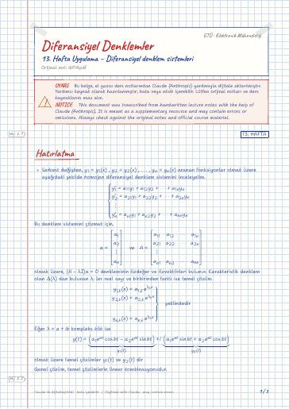

Diferansiyel Denklemler · Dijital ders notu
13. Hafta Uygulama – Diferansiyel denklem sistemleri
- Ders
- Diferansiyel Denklemler (MAT215)
- Dönem
- 3. Dönem · 2022–2023 Güz
- Biçim
- PDF · 5 sayfa · 0,1 MB · el yazısı görünümlü LaTeX
- Orijinal not
- dif14.pdf

The digital notes were created from the handwritten notes with the help of Claude (Anthropic); they are meant as a supplementary resource and may contain errors. Always rely on the original notes and the official course materials.
Bu notta neler var?
- Hatırlatma
- Alıştırmalar
Notun metni
Düz metin olarak göster (formüller ve çizimler yoktur)
Serbest değişken, y_1 = y_1(x) , y_2 = y_2(x) , … , y_n = y_n(x) aranan fonksiyonlar olmak üzere aşağıdaki şekilde homojen diferansiyel denklem sistemini inceleyelim.
Bu denklem sistemini çözmek için,
olmak üzere, (A-λ I)α = 0 denkleminin özdeğer ve özvektörleri bulunur. Karakteristik denklem olan Δ(λ) dan bulunan λ_i ler reel sayı ve birbirinden farklı ise temel çözüm
Eğer λ = a+ib kompleks kök ise
olmak üzere temel çözümler y_1(t) ve y_2(t) dir
Genel çözüm, temel çözümlerin lineer kombinasyonudur.
Öncelikle Δ(λ) determinantından özdeğer ve özvektörleri bulalım.
Bu durumda, genel çözüm
Öncelikle Δ(λ) determinantından özdeğer ve özvektörleri bulalım.
Bu durumda, genel çözüm
Öncelikle Δ(λ) determinantından özdeğer ve özvektörleri bulalım.
Bu durumda, genel çözüm
Öncelikle Δ(λ) determinantından özdeğer ve özvektörleri bulalım.
Bu durumda, genel çözüm